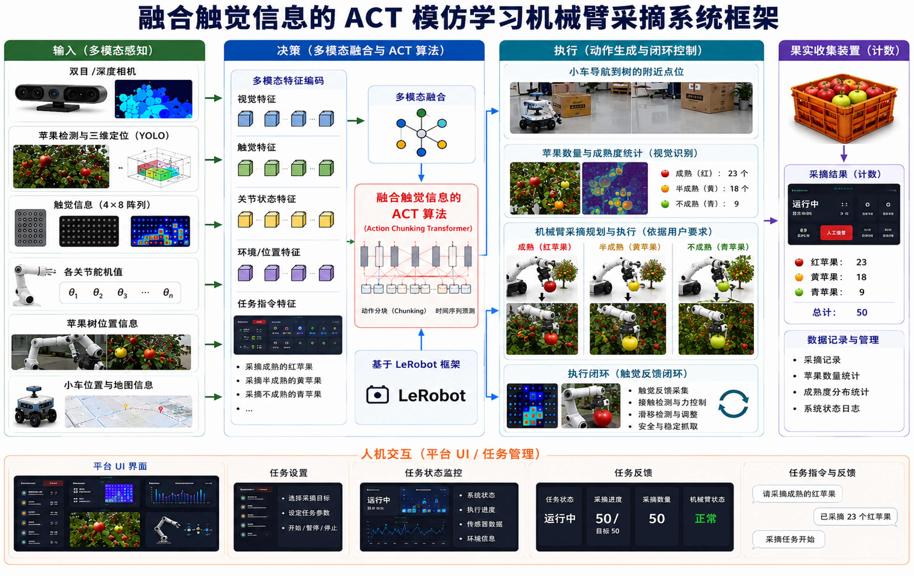
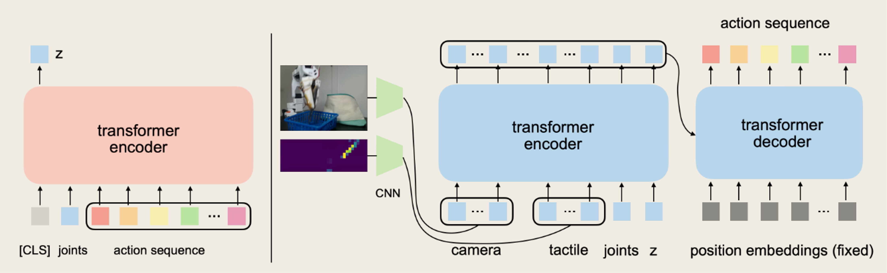

本项目面向具身智能柔性作业场景，针对传统纯视觉抓取方式缺乏接触力感知、极易造成易碎、柔性物体挤压破损的行业难题，基于 LeRobot 开源机器人学习框架搭建了一套视觉-触觉-本体状态三模态融合的机器人自适应抓取系统。项目以 SO-ARM101/SO-100 桌面级六自由度机械臂为执行载体，搭载双路 RGB 视觉相机与 DFRobot 4×8 阵列触觉传感器，采用 ACT（Action Chunking Transformer）模仿学习策略，实现端到端的灵巧抓取策略训练与真实硬件部署。
本项目通过搭建专属 CNN 触觉编码器，将二维压力分布空间特征编码为语义 Token，与双视角视觉特征、机械臂本体状态特征完成深度融合；创新性采用训练行为克隆 + 推理触觉力控的解耦架构，在不破坏策略学习泛化性的前提下，通过实时触觉反馈动态限制夹爪夹紧力度，有效解决柔性物体抓取破损、滑移失效问题，最终实现水果等易碎物体的安全、自适应、无损柔性抓取。

